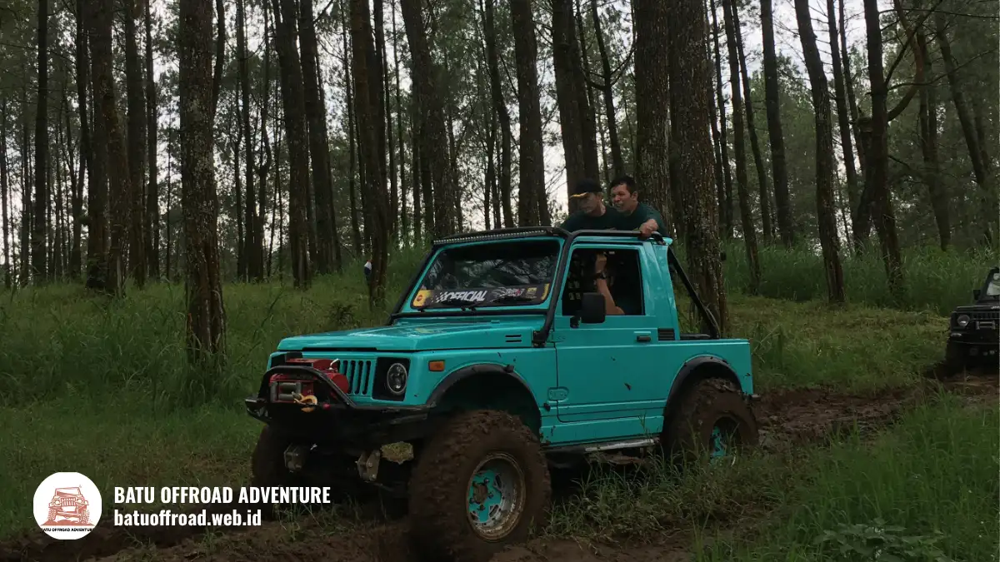

Offroad Coban Rondo Jeep 4x4 untuk Rombongan Bus Besar
Offroad Coban Rondo bersama Batu Offroad menawarkan kegiatan jeep 4x4 untuk rombongan, termasuk rombongan bus besar. Akses bus ke kawasan Coban Rondo tergolong luas, toiletnya banyak, dan area camp ground tersedia. Kegiatan ini cocok untuk rombongan kantor, sekolah, dan komunitas. Untuk jadwal dan booking, hubungi WhatsApp +62 812-3398-9707.
Batu Offroad adalah penyedia jasa offroad di Batu dan Malang Raya. Artikel ini membahas kegiatan jeep 4x4 di Coban Rondo untuk rombongan bus besar: alasan memilih lokasi ini, cara kami menyusun kegiatan untuk rombongan besar, kendaraan yang kami gunakan, sampai cara memesan. Informasi yang belum kami verifikasi di lapangan kami tandai dengan jelas.
Mengapa Coban Rondo Cocok untuk Rombongan Bus Besar
Alasan utama rombongan memilih Coban Rondo adalah akses bus yang luas. Rombongan dapat turun di area parkir kawasan, lalu melanjutkan kegiatan dengan jeep offroad Batu tanpa perlu berpindah lokasi terlalu jauh. Jalur utama menuju Coban Rondo melewati jalur Batu–Pujon, kemudian masuk dari pertigaan Patung Sapi di Pandesari menuju gerbang kawasan sekitar 4 km.
Fasilitas toilet juga menjadi pertimbangan penting untuk rombongan besar. Toilet dan sarana ibadah tersedia di beberapa titik strategis di kawasan Coban Rondo, sehingga peserta dapat beristirahat sebelum atau sesudah kegiatan offroad.
Kawasan ini juga memiliki area camp ground dan area khusus paintball. Kombinasi keduanya dengan kegiatan jeep 4x4 membuat rombongan bisa menyusun rangkaian acara dalam satu lokasi, dari sesi games di pagi hari sampai jeep di siang hari.
Suasana Kawasan Coban Rondo
Coban Rondo dikenal dengan hutan pinus dan air terjunnya. Kawasan ini berada di dataran tinggi, sehingga udaranya cenderung sejuk dibanding kota. Bagi rombongan, suasana sejuk membantu peserta tetap nyaman selama kegiatan fisik di luar ruangan. Jam kunjung resmi umumnya 08.00–16.00 WIB setiap hari.
Saat musim hujan, sekitar November sampai Maret, jalur dan area sekitar air terjun bisa licin. Kami menyarankan rombongan tiba lebih awal dan memakai sepatu yang kuat sesuai panduan di daftar persiapan offroad Batu Malang.
Studi Kasus Rombongan
Sebuah rombongan kantor dengan jumlah peserta 50–100 orang pernah kami layani dengan kebutuhan gathering, outbound ringan, dan aktivitas jeep 4x4. Dari pengalaman itu, kami menyusun pembagian kelompok per kendaraan, urutan giliran jeep, dan jadwal istirahat di sela kegiatan.
Catatan Hasil Kegiatan
Peserta dibagi menjadi kelompok kecil per jeep agar waktu tunggu lebih pendek, sementara peserta yang menunggu giliran mengikuti games atau istirahat di area camp ground.
Pola yang sama bisa kami terapkan untuk rombongan sekolah dan komunitas, dengan penyesuaian pada jumlah pendamping, kebutuhan waktu istirahat, dan jenis aktivitas. Jika rombongan Anda memiliki kebutuhan khusus, sampaikan sejak awal melalui WhatsApp +62 812-3398-9707.

Jeep offroad toska melintasi keasrian hutan pinus menuju kawasan Coban Rondo
Jeep 4x4 untuk Rombongan Besar
Kegiatan di Coban Rondo kami lakukan dengan jeep 4x4. Untuk rombongan besar, jeep dibagi per kelompok agar setiap kendaraan membawa jumlah peserta yang sesuai dengan kapasitasnya. Kapasitas jeep offroad umumnya sekitar 3–5 orang per unit termasuk pengemudi, sehingga jumlah unit akan disesuaikan dengan jumlah peserta dan jadwal rombongan.
Sebelum kegiatan, peserta mendapat arahan singkat tentang aturan naik jeep dan cara menjaga keselamatan. Isi arahan ini mengikuti SOP resmi kami: peserta wajib mengikuti instruksi pengemudi, duduk sesuai tempat yang ditentukan, memakai sabuk pengaman bila tersedia, tidak berdiri atau keluar saat jeep berjalan, serta mengikuti batas area yang ditetapkan petugas.
Kegiatan dan Kendaraan
Rangkaian kegiatan bisa disesuaikan dengan jumlah peserta dan jadwal bus. Tim kami membantu menentukan kombinasi yang paling efisien, mulai dari paket offroad fun games hingga paket offroad team building.
Rute Bus ke Coban Rondo
Rute dari titik kumpul ke Coban Rondo kami rangkum dari perjalanan survei. Jalur yang umum dipakai adalah jalur Batu menuju Pujon, lalu mengikuti petunjuk ke arah Coban Rondo setelah Pandesari. Titik pentingnya adalah pertigaan Patung Sapi; dari titik tersebut, bus melanjutkan sekitar 4 km menuju gerbang Wana Wisata Coban Rondo.
Waktu tempuh dari Kota Malang sekitar 45–60 menit, sedangkan dari Batu sekitar 30–45 menit, tergantung titik kumpul dan kepadatan lalu lintas. Untuk bus, titik yang perlu diperhatikan adalah tanjakan, tikungan, dan jalan masuk kawasan yang lebih sempit dibanding jalan utama.
Jam berangkat yang kami sarankan adalah pukul 06.30–07.30 WIB agar rombongan tiba sebelum area utama mulai ramai. Panduan langkah demi langkah tersedia juga untuk bus rombongan Coban Rondo.
Fasilitas untuk Rombongan Besar
Fasilitas yang sudah tercatat untuk Coban Rondo adalah akses bus yang luas, toilet yang banyak, area camp ground, dan area paintball. Fasilitas pendukung lain yang tersedia meliputi musholla, warung atau area kuliner, serta area duduk dan tempat teduh di sekitar kawasan wisata.
Destinasi Sekitar yang Bisa Digabung
Setelah offroad, rombongan bisa menambah kunjungan ke destinasi sekitar, seperti Flora Wisata San Terra de Lafonte, Goa Pinus, dan Air Terjun Sumber Pitu di kawasan Pujon, atau destinasi populer lain seperti tertera pada artikel wisata dekat Coban Putri.
Cara Booking untuk Rombongan Bus
Kirim pesan ke WhatsApp +62 812-3398-9707 dengan informasi berikut: tanggal kegiatan, jumlah peserta, jumlah bus, dan jenis kegiatan yang diinginkan. Tim kami akan menyusun rundown, membagi kelompok per jeep, dan mengonfirmasi ketersediaan armada.
Rundown dan titik kumpul akan kami kirim sebelum hari kegiatan. Untuk pertanyaan tentang biaya, silakan tanyakan langsung melalui WhatsApp sesuai panduan cara booking offroad Batu.
Tips Sebelum Berangkat
Koordinator rombongan sebaiknya mengumpulkan data peserta, termasuk kondisi kesehatan yang perlu diperhatikan, beberapa hari sebelum kegiatan. Persyaratan usia dan kesehatan mengikuti SOP kami: anak-anak ditemani orang tua atau pendamping, peserta dengan kondisi kesehatan tertentu sebaiknya berkonsultasi terlebih dahulu, dan peserta hamil atau memiliki keterbatasan mobilitas disarankan memilih kegiatan yang lebih ringan.
Peserta disarankan memakai pakaian yang nyaman dan tertutup serta sepatu yang kuat. Daftar perlengkapan resmi: sepatu olahraga atau sepatu tracking, jaket tipis, topi, air minum, obat pribadi, dan pakaian ganti bila diperlukan. Datanglah pagi bila memungkinkan, terutama saat musim hujan.
Pertanyaan yang Sering Diajukan
-
Apakah bus bisa masuk sampai area Coban Rondo?
Akses bus ke kawasan Coban Rondo tergolong luas. Bus dapat turun di area parkir kawasan, lalu peserta melanjutkan kegiatan dengan berjalan kaki atau menggunakan jeep sesuai rundown. -
Berapa peserta yang bisa ikut dalam satu rombongan?
Jumlah peserta bergantung pada jumlah jeep dan jadwal pada tanggal kegiatan. Untuk rombongan besar, kami menyusun pembagian giliran per kelompok agar seluruh peserta tetap mendapat kesempatan mengikuti kegiatan. -
Apakah kegiatan ini cocok untuk anak-anak dan lansia?
Kelayakan peserta mengikuti SOP kami. Jika ada peserta dengan kondisi khusus, sampaikan melalui WhatsApp sebelum booking. -
Bagaimana cara booking untuk rombongan bus?
Kirim tanggal, jumlah peserta, jumlah bus, dan jenis kegiatan ke WhatsApp +62 812-3398-9707. Tim kami akan menyusun rangkaian kegiatan dan mengonfirmasi jadwalnya.
Kesimpulan
Offroad Coban Rondo bersama jeep 4x4 adalah pilihan ideal untuk rombongan bus besar yang menginginkan kombinasi pemandangan alam memukau, kemudahan akses parkir bus, dan fasilitas pendukung yang lengkap.
Ingin membawa rombongan bus ke offroad Coban Rondo? Kirim tanggal, jumlah peserta, dan jumlah bus ke WhatsApp +62 812-3398-9707. Tim Batu Offroad akan menyusun rangkaian kegiatannya. Lihat juga paket layanan kami.